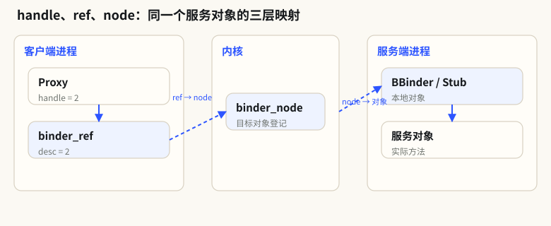
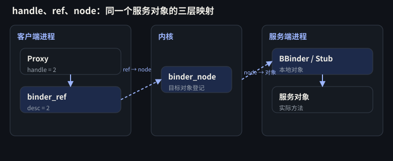
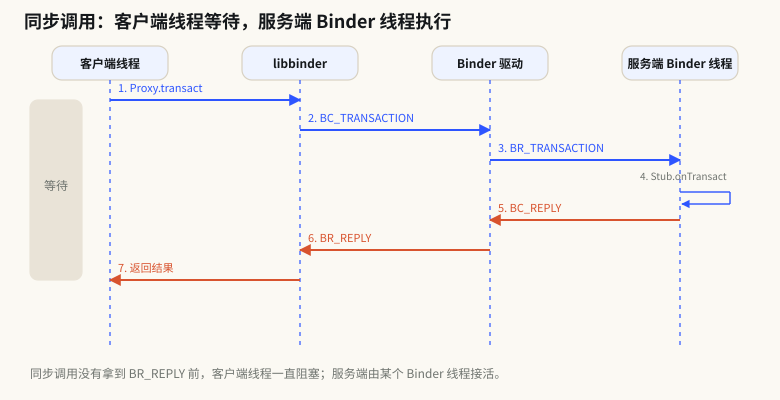
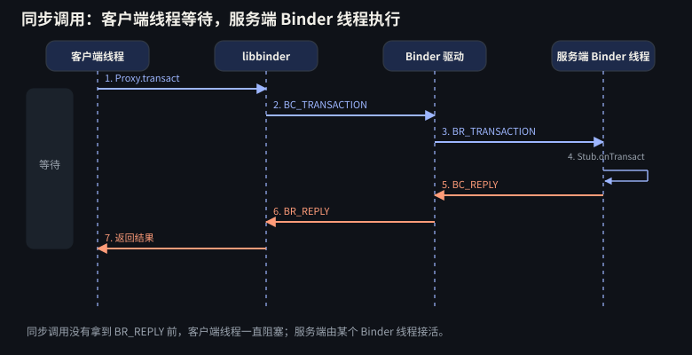
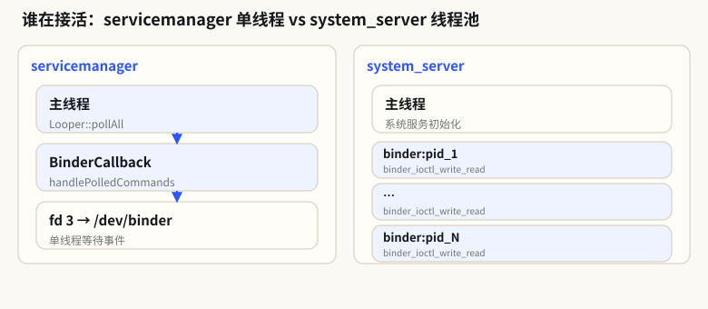
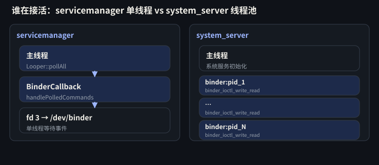

- Android
- 15 / SDK 35
- AOSP
- Android 15
- 样本
- servicemanager
IServiceManager - 验证方式
- adb shell
先把 Binder 简化成一句人话：
客户端拿着一个本地代理，调用它的方法；代理把参数打包，交给内核驱动；驱动把请求送到服务端的一个Binder 线程；服务端的 Stub 解包并调用真正的对象；结果再沿原路返回。
这句话里有五个关键角色：Client、Proxy、Driver、Stub、Server。接下来我们逐个拆开。
先看一次真实调用：service check activity
假设有一个远程服务：
interface IServiceManager {
IBinder checkService(String name);
}客户端代码写的是：
IBinder activity = serviceManager.checkService("activity");看起来像一次普通 Java 方法调用，但实际上客户端进程里并没有真正的 IServiceManager 服务对象。它拿到的是一个 Proxy，这个 Proxy 会把调用翻译成一次 Binder 事务。
这不是比喻。在 Android 15 真机上可以直接发起同一种调用：
adb shell service check activityService activity: foundservice 命令本身就是个 Binder 客户端。它在 service.cpp 里拿到 IServiceManager，再调用 checkService()：
sp<IServiceManager> sm = defaultServiceManager();
if (strcmp(argv[optind], "check") == 0) {
sp<IBinder> service = sm->checkService(String16(argv[optind]));
aout << "Service " << argv[optind] <<
(service == nullptr ? ": not found" : ": found") << endl;
}五个角色
| 角色 | 在哪里 | 它做什么 |
|---|---|---|
| Client | 客户端进程 | 发起调用，等待结果或拿到一个代理 |
| Proxy | 客户端进程 | 接口的本地替身：打包 Parcel，调用 transact() |
| Binder Driver | 内核 | 解析 handle、复制数据、投递事务、唤醒线程 |
| Stub | 服务端进程 | 接收事务，解包 Parcel，调用真正的服务方法 |
| Server | 服务端进程 | 真正的业务对象和方法实现 |
这里最容易产生误解的是：Proxy 不是远程对象的引用指针。它是一个本地对象，内部保存一个 handle。你调用 Proxy 的方法时，远程方法还没有执行；真正执行发生在服务端。


读图时先找三条边界：用户态 / 内核态、客户端 / 服务端、请求 / 回复。Proxy 和 IPCThreadState 在客户端侧；Binder 线程和 Stub 在服务端侧；中间的内核只负责解析 handle、搬运 transaction 和唤醒线程，不执行服务方法。
对象关系：handle、ref 与 node
先看对象是怎么被“指过去”的：


- handle 是客户端进程内的一个小整数，比如
1。它只在当前进程里有意义。 - ref 是客户端进程里的一条 Binder 引用记录，把 handle 映射到目标对象。
- node 是服务端 Binder 对象在内核里的登记，代表“这个服务对象是谁”。
- 同一个服务被两个客户端引用时，两个客户端可能有不同的 handle，但最终都指向同一个服务端 node。
所以不要把 handle 理解成“全局服务 ID”。它更像一张本地取件码：同一个包裹，在不同快递站可能有不同的编号。
在真机上直接看一次 handle 返回：
adb shell service call manager 2 s16 activityResult: Parcel(
0x00000000: 00000000 73682a85 00000000 00000002 '.....*hs........'
0x00000010: 00000000 00000000 00000000 0000000c '................'Object #0 @ 0x4: 'sh*' = 2)这里的 handle = 2 只属于当前这个 service 进程。换一个客户端进程查同一个 activity，handle 可能不同；它们最终都指向同一个服务端 node。
一次同步调用，经过了什么
还是查服务：


图中“等待”的区域就是客户端线程被占住的时间；“执行”只发生在服务端的 Binder 线程里。客户端进程的其他线程仍然可以继续跑，所以“Binder 调用阻塞”通常说的是发起调用的那个线程，而不是整个进程。
客户端最终落到 BpBinder::transact 和 IPCThreadState::transact：
status_t BpBinder::transact(
uint32_t code, const Parcel& data, Parcel* reply, uint32_t flags)
{
// ...
status = IPCThreadState::self()->transact(binderHandle(), code, data, reply, flags);
// ...
return status;
}status_t IPCThreadState::transact(int32_t handle,
uint32_t code, const Parcel& data,
Parcel* reply, uint32_t flags)
{
// ...
err = writeTransactionData(BC_TRANSACTION, flags, handle, code, data, nullptr);
if ((flags & TF_ONE_WAY) == 0) {
// ...
err = waitForResponse(reply);
} else {
err = waitForResponse(nullptr, nullptr);
}
return err;
}同步调用在 waitForResponse() 里等待；它会继续调用 talkWithDriver()，最终阻塞在 ioctl(BINDER_WRITE_READ)，直到驱动返回 BR_REPLY。所以“客户端线程阻塞”不是框架层假装的，而是真实的线程等待。
为什么要 Parcel
第 0 章说过，进程之间不能传指针。Proxy 会把方法参数写进 Parcel：
// 概念伪代码
parcel.writeInterfaceToken("android.os.IServiceManager");
parcel.writeString("activity");
binder.transact(CHECK_SERVICE, parcel, reply, 0);
IBinder service = reply.readStrongBinder();服务端 Stub 做相反的事：读取接口标识、读取参数、调用真正的 checkService()，再把结果写回 reply Parcel。
AIDL 生成的代码就是替你写这些读写逻辑。AIDL 不是传输层，它只是把接口翻译成 Proxy / Stub 和 Parcel 代码。
服务端到底是谁在跑
这是最容易误解的地方：
Binder 方法通常不在服务端主线程执行，而是在 Binder 线程池里的某个线程执行。
一个进程可以有多个 Binder 线程，因此：
- 多个客户端可以同时调用同一个服务。
- 服务实现必须考虑并发和线程安全。
- 你在服务方法里更新 UI，不能假设自己在主线程。
- 同步调用会占住调用方线程；服务端处理慢，调用方就一直等。


在 Android 15 真机上观察 system_server 的 Binder 线程：
adb shell 'ps -T -p $(pidof system_server) -o USER,PID,TID,PPID,WCHAN,S,CMD | grep "binder:" | head -n 8'system 3139 3183 2714 binder_ioctl_write_read S binder:3139_1
system 3139 3184 2714 binder_ioctl_write_read S binder:3139_2
system 3139 3338 2714 binder_ioctl_write_read S binder:3139_3
system 3139 3809 2714 binder_ioctl_write_read S binder:3139_4
system 3139 4105 2714 binder_ioctl_write_read S binder:3139_5
system 3139 4665 2714 binder_ioctl_write_read S binder:3139_6
system 3139 4758 2714 binder_ioctl_write_read S binder:3139_7
system 3139 4763 2714 binder_ioctl_write_read S binder:3139_8再对比 servicemanager：它只有主线程，阻塞在 ep_poll，没有一组 binder:pid_N 线程。原因在启动代码：setThreadPoolMaxThreadCount(0)，并把 Binder fd 注册到主线程的 Looper。
adb shell 'ps -T -p $(pidof servicemanager) -o USER,PID,TID,PPID,WCHAN,S,CMD'USER PID TID PPID WCHAN S CMD
system 2567 2567 1 ep_poll S servicemanager先记住一条实践规则：不要在 Binder 线程里做长时间阻塞操作；更复杂的嵌套调用和死锁，后面讲线程模型时再看。
本地对象与远程对象
并不是所有 Binder 调用都会进内核。如果服务对象和客户端在同一个进程，Stub.asInterface() 会直接返回本地实现，调用就变成普通方法调用；只有拿到远程代理时，才走 Binder 驱动。
所以“有 IBinder”不等于“每次调用都跨进程”。这一点先知道即可。
DeathRecipient 通知，属于生命周期管理，放到第 4 章再讲。现在只需要知道远程对象可能会失效。四个最容易混淆的点
| 误解 | 更准确的理解 |
|---|---|
| handle 是全局服务 ID | handle 只在所属进程内有意义；同一个 node 在不同进程可有不同 handle |
| Proxy 就是远程对象 | Proxy 是本地替身，内部持有 handle；真正方法在服务端执行 |
| Binder 调用会切到服务端主线程 | 通常由服务端的 Binder 线程池处理，不是主线程 |
| Binder 是零拷贝 | 核心数据会复制到接收方 buffer；大块数据通常改用共享内存 |
动手实验
实验 1：看一次真实的服务查询
adb shell service check activity
adb shell service call manager 2 s16 activity第一条命令证明服务存在；第二条命令直接调用 IServiceManager.checkService，在 Parcel 里能看到返回的 handle。试着解释：为什么这里返回的是整数，而不是服务名？
实验 2：观察 Binder 线程
adb shell ps -A | grep -E "servicemanager|system_server"
adb shell 'ps -T -p $(pidof system_server) | grep "binder:" | head -n 8'
adb shell 'cat /proc/$(pidof servicemanager)/maps | grep binder'记录 system_server 的 binder:pid_N 线程数和 WCHAN，再解释为什么 servicemanager 没有同样多的 Binder 线程。
实验 3：把对象图画出来
不看笔记，画出：
- 客户端进程里的 Proxy 和 handle；
- 内核里的 ref / node；
- 服务端进程里的 Stub 和真实对象；
- 一条同步调用的箭头，以及返回箭头的方向。
画完后对照图 2-1 ~ 图 2-4，检查自己有没有把 handle 和 node 混为一谈。
自测题
1. Proxy 是远程对象的指针吗？
不是。Proxy 是客户端进程里的本地对象，内部保存一个 handle。调用 Proxy 的方法只是把参数打包并发出事务，真正执行在服务端。
2. 为什么同一个服务在不同客户端里的 handle 可能不同？
handle 是客户端进程内的引用编号，由每个进程自己的 Binder 引用表管理。它们可以指向同一个服务端 node，但编号不需要一致。
3. 同步 Binder 调用阻塞了谁？
阻塞发起调用的那个线程，直到收到回复或错误。进程里的其他线程仍然可以继续运行。
4. 服务端方法运行在哪个线程？
通常运行在服务端进程的 Binder 线程池线程中，而不是主线程。因此服务实现要考虑并发和线程安全。
5. AIDL 和 Binder 的关系是什么？
AIDL 负责定义接口并生成 Proxy / Stub / Parcel 读写代码；Binder 负责真正的跨进程对象引用、事务投递和线程调度。
本章小结
现在你应该能用一个固定句式解释一次 Binder 调用：
客户端线程调用 Proxy；Proxy 把参数写进 Parcel，通过 handle 发起 transact；驱动把事务投递给服务端的 Binder 线程；Stub 解包并调用真实对象；结果再沿原路返回。
下一章会把这句话变成真正的系统调用：用 service 命令看 AIDL 生成的 Proxy / Stub，确认两个 PID 和服务端 Binder 线程。